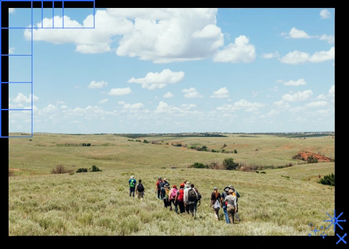
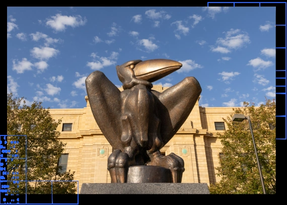

Chapter 01 · Until 2018
Louisiana
Where I started in computer science.
-
Associate’s degree, Computer Science2018
University of Louisiana at Monroe
UX Developer
Available for new roles
I work in both UX design and frontend, so I can design an idea and build it myself.
About me
Hi, I’m Manahari, a UX engineer in the US. I do both the design and the code, so I can take an idea all the way to something people can use.
Based in the USAvailable for UX design and UX engineering roles
01 · My path
My path so far, in four chapters.
Chapter 01 · Until 2018
Where I started in computer science.
Associate’s degree, Computer Science2018
University of Louisiana at Monroe
Chapter 02 · 2018 to 2022
I finished my computer science degree and found UX through research work on campus and a summer internship at Esri.
B.S. Computer Science2022
Brigham Young University–Idaho
UI/UX and Frontend InternJun to Aug 2021
Esri · Redlands, CA
UX Researcher and IT Content DeveloperSep 2019 to Jun 2021
BYU–Idaho · Rexburg, ID


Chapter 03 · 2022 to 2025
I built the University of Kansas brand site as a frontend developer, from research to the pages campus partners use.
Frontend DeveloperJun 2022 to Apr 2025
University of Kansas · Lawrence, KS
Research, design and frontend for the University of Kansas brand site.

Chapter 04 · 2025 to now
I’m studying human-computer interaction at UNC Chapel Hill while designing for a surgical console and student apps.
M.S. Information Science, Human-Computer InteractionExpected 2027
UNC Chapel Hill
Graduate Research AssistantFeb 2026 to Present
UNC Chapel Hill · Chapel Hill, NC
UX Design InternMay to Aug 2026
Karl Storz · Morrisville, NC
Three fixes for a robotic surgery console.
UX DesignerSep 2025 to May 2026
App Team Carolina · Chapel Hill, NC
02 · Research
Master’s paperIn progress
ASIS&TAccepted
Poster · 2 pages
School symposiumsOnce
Presented
Michael Hooker Fellow2026
Emerging Scholar AwardFall 2017, Spring 2018
Received twice
Academic Recognition Award2016 to 2018
BYU–Idaho Scholarship2019 to 2022
03 · Skills